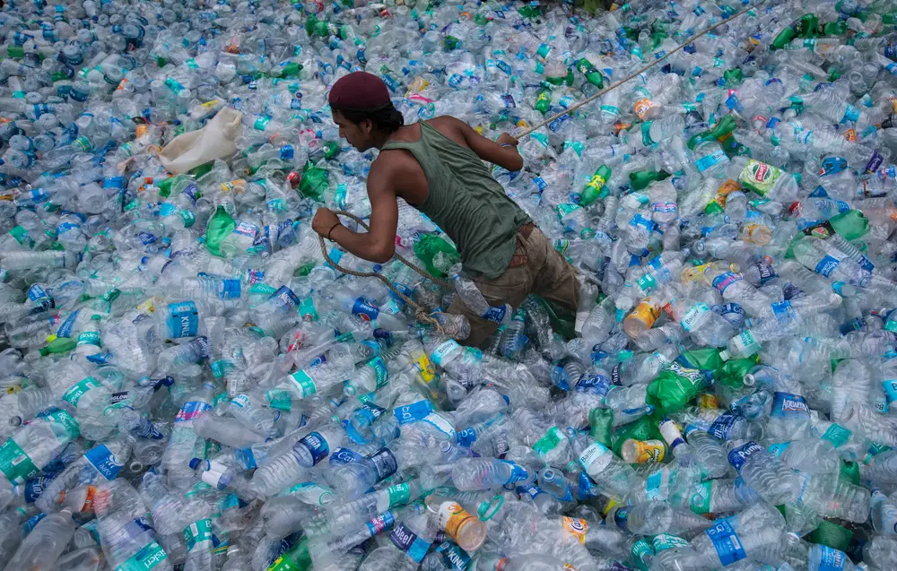
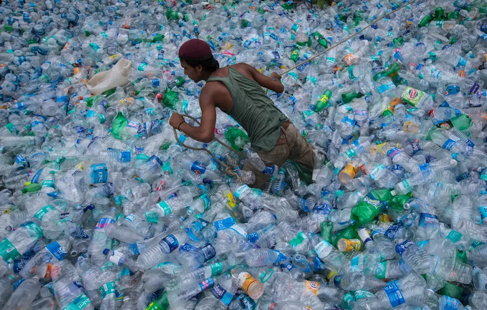

What is Solid Waste Management ?
Mainly refers to the complete process of collecting, treating and disposing of solid wastes. In the waste management process, the wastes are collected from different sources and are disposed of.
This process includes collection, transportation, treatment, analysis and disposal of waste.
Sources of Solid Wastes
- Solid domestic garbage
- Solid agricultural waste
- Plastics, glass, metals, e-waste, etc
- Medical waste
- Construction waste, sewage sludge
 
